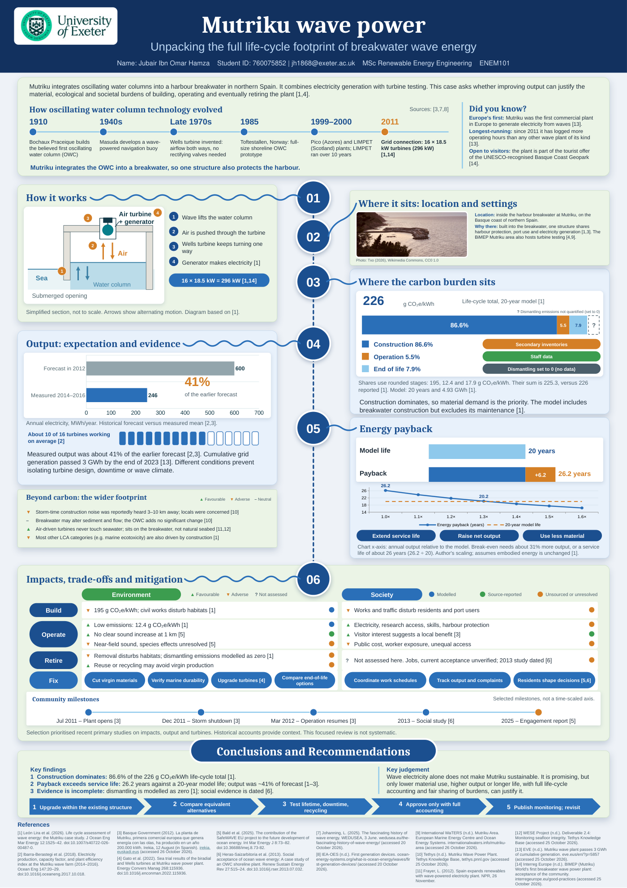

Mutriku wave power.
Unpacking the full life-cycle footprint of breakwater wave energy.

What are Mutriku’s environmental impacts across its full life cycle, and how can adverse effects be reduced?
The poster examines breakwater-integrated oscillating water column (OWC) technology through the Mutriku case study. Its environmental scope runs from raw-material extraction and manufacture through construction, operation and maintenance to decommissioning, reuse, recycling and disposal.
Beyond the Poster examines climate impacts alongside resource use, noise, habitats and end-of-life uncertainty. It also considers societal benefits, burdens and participation. Proposed mitigation is assessed against the evidence, its trade-offs and what would need to be verified.
Read the findings in context
- 12.4 g CO₂e/kWh is the operation-stage contribution. The reported modelled life-cycle total is 226 g CO₂e/kWh.
- 26.2 years is a preliminary energy-payback estimate, rather than a measured plant outcome.
- The noise observation at 1 km does not establish near-field or ecological safety.
- Jobs, current acceptance and mitigation effectiveness require further evidence. The improvement options are proposals.
- The 2014–2016 study describes 14 operating turbines and approximately 10 working on average. The original installation comprised 16 turbine positions.
This website supplements the poster. It makes assumptions and evidence limits visible for discussion and further study.
Follow the reasoning.
Explore an interactive OWC diagram, output comparisons, separate environmental and social assessments, and a payback sensitivity tool. Each section connects its claims to the relevant evidence.